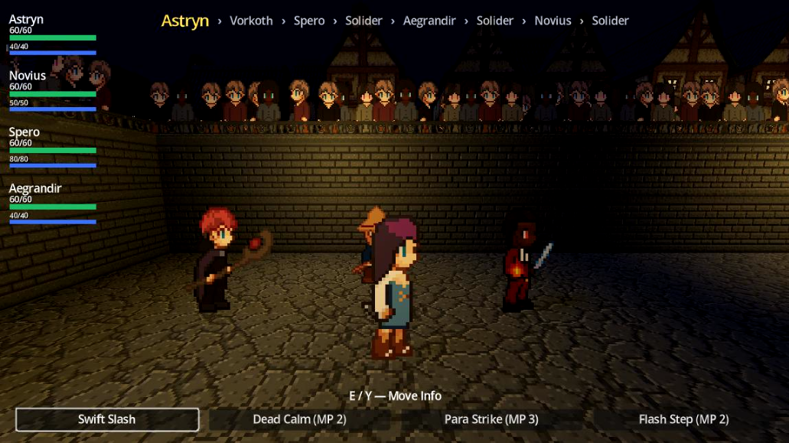
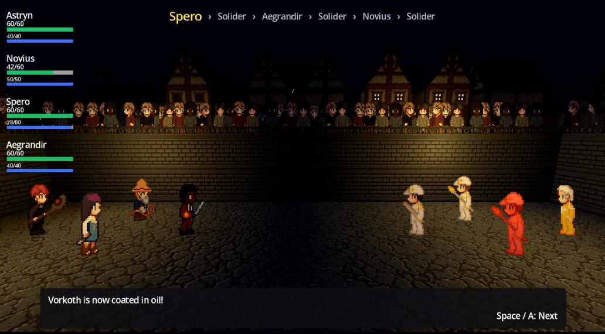

How It Works
Combat is built on the turn-based fundamentals players already know: speed-ordered turns, physical and magic move categories, accuracy and evasion, stat buffs and debuffs, and critical hits. That familiar foundation is what makes the party's signature system land: a coating-and-proc mechanic layered on top to make the party feel connected. One move applies a coating status effect to a target, and a different move (often from a different party member) procs that coating for a bonus payoff.
Downpour drenches every combatant on the field in a water coating, and a follow-up Ice-type move like Crystal Needle procs that coating into a full Freeze. The same pattern applies to oil coatings, where a Fire-type move ignites the coating for bonus damage. Building a party is as much about pairing setup moves with the right follow-ups as it is about raw stats.
Combat Precision
Stat buffs and debuffs run on stages from -4 to +4, and each stage isn't a flat percentage: the effective multiplier ranges from 0.4x at -4 up to 2.5x at +4 on a curve, so stacking stages further keeps mattering rather than flattening out. Critical hits deal 1.5x damage and also ignore the attacker's own negative attack stage and the defender's positive defense stage, so a crit reliably punches through a stat-debuffed attacker or a buffed-up defender. A move that shares a type with its user gets a same-type attack bonus of 1.5x, and every hit rolls a flat 0.85 to 1.0 damage variance on top of all of that. Provoke is a double-edged status: it boosts damage dealt by 50% and damage taken by 50% at the same time.
Mana is party-only. Enemies don't use it at all, and physical moves are always free for everyone; only magic and status moves cost MP. If a party member can't afford anything in their move set, combat force-picks a free move for them with the message "is out of mana and acts on instinct!" rather than letting them stall. Downed party members can be brought back by a revive move, but a defeated enemy is gone for the rest of the fight.
Type Matchups
Every move and character has a type. Read across a row to see what that type takes extra or reduced damage from (defense); read down a column to see what that type deals extra or reduced damage to (offense).
| Defender \ Attacker | Basic | Fire | Water | Plant | Earth | Dark |
|---|---|---|---|---|---|---|
| Basic | 1× | 1× | 1× | 1× | 2× | 0.25× |
| Fire | 1× | 1× | 2× | 0.5× | 2× | 2× |
| Water | 1× | 0.5× | 1× | 2× | 0.5× | 2× |
| Plant | 1× | 2× | 0.5× | 1× | 0.5× | 2× |
| Earth | 0.5× | 2× | 0.5× | 0.5× | 1× | 1× |
| Dark | 2× | 1× | 0.5× | 0.5× | 1× | 1× |
Typings
Six primary types anchor the matchup chart above.
A handful of subtypes add flavor and move variety, but each one resolves to a parent primary type for damage calculations:
- Ice → Water
- Electric → Fire
- Leaf → Plant
- Wood → Plant
- Rock → Earth
- Ground → Earth
- Poison → Dark
- Psychic → Dark
Status Conditions
- Paralyze
- Halves the paralyzed character's physical attack power, and halves their evasion.
- Freeze
- Locks the target out of acting at their next turn, and halves their evasion while frozen.
- Poison
- Deals damage at the start of the target's turn, scaled by the inflicting character's magic power against the target's magic defense.
- Burn
- Deals damage at the start of the target's turn, using the same scaling as Poison.
- Provoke
- Increases damage dealt by the provoked character by 50%, and increases damage they take by 50%.
- Taunt
- Forces the opposing side's offensive moves to target the taunting combatant.
- Oil Coating
- Fire-type moves against a coated target deal 1.5x damage and ignite the coating away.
- Water Coating
- Ice-type moves against a coated target trigger Freeze, consuming the coating.
- Tar Coating
- Halves the coated combatant's effective speed for turn order.
- Rooted Coating
- Halves the coated combatant's effective speed for turn order.